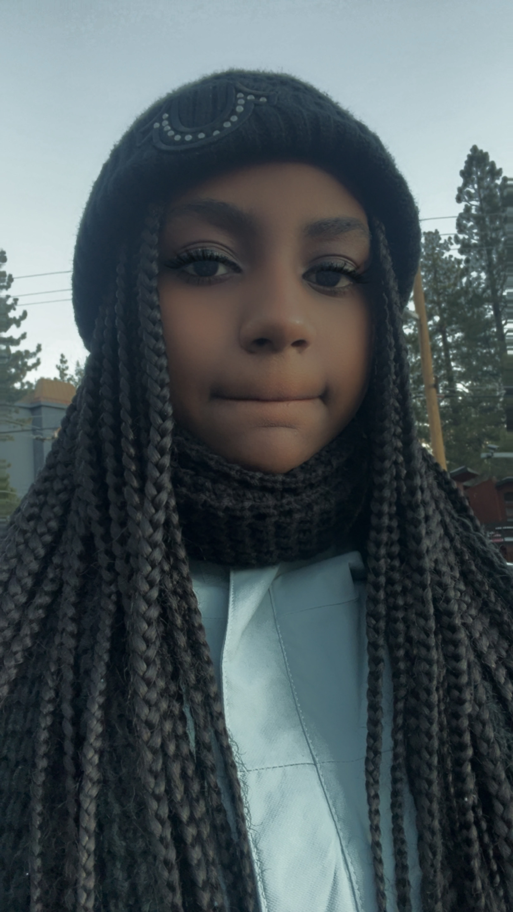

I am a current student here at San Francisco State University.if you’re looking at a mentally drained 20-year-old or a happy, energetic person drinking coffee and smoothies all the time? Collects keychains? Draws a random doodle? Stays up late listening to music? ITS ME!!!! >:333 My name is Ashaia Knox, and I am a current student here at SF State. My major is Visual Communications skill (aka graphic design). The reason why I chose this major is that I came to an agreement that I have always loved to draw. There were times in the past when I would draw on anything besides paper (e.g., hands, tables, and even walls) (plz don’t draw on public property).My favorite colors are wine red and a pastel jade green, or a pastel olive green and black, as my third favorite color. My favorite food to eat depends on what my mom makes for me, or I binge on snacks that I buy from stores. My favorites are sodas, juices, and coffee. and mainly been into smoothies (mango and strawberry banana are my favorites). I can’t stand drinking energy drinks anymore since the last time I almost lost control. I love to make music and draw random sketches and doodles on my phone or on paper, and I like to nap on a daily basis and play video games. And sometimes COOK (baking is my specialty). I also like to collect keychains and stickers. I have a lot of them and I love them all. I come from california raised in San francisco bayviews hunter point. For my drawing history i have been drawing for CENTURIES! From the age of probably around 6 or lower. I have managed to gain some audience and support and some hated it to the point of destroying my creations! But its ok i still continue to draw anyway same with my music skills! So yeah thats a little something about me
Fun Facts About me!
1. Art was my first passion in creation before i move onto music making! I havw been drawing for years!
2. I have a total of probably 54 or more songs that I have recorded and made from my phone.
I have been making music since 2020 in freshman year in school officially. (aroud 7 years in total of making music.)
3. I have a total of around 8-9 keychains some were gifts and some were bought by me.
I have a lot of keychains
My all time favorite Movies or tv shows